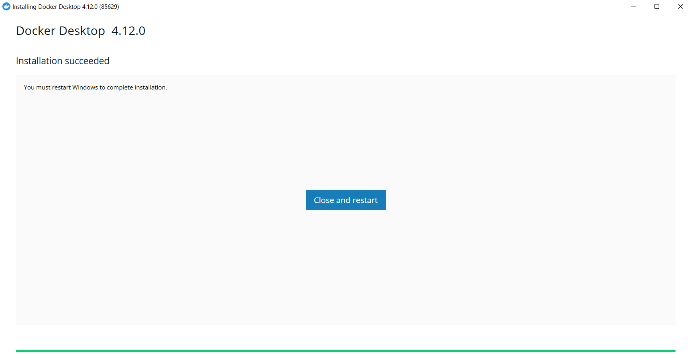
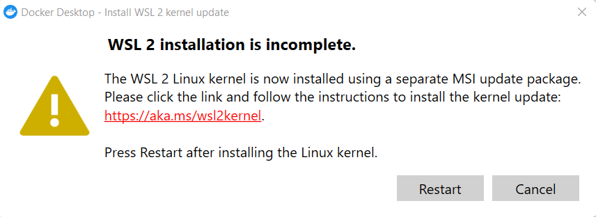
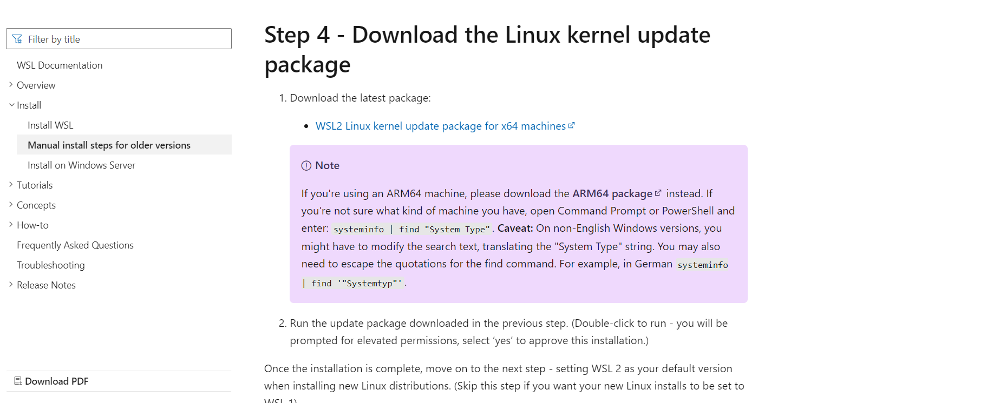
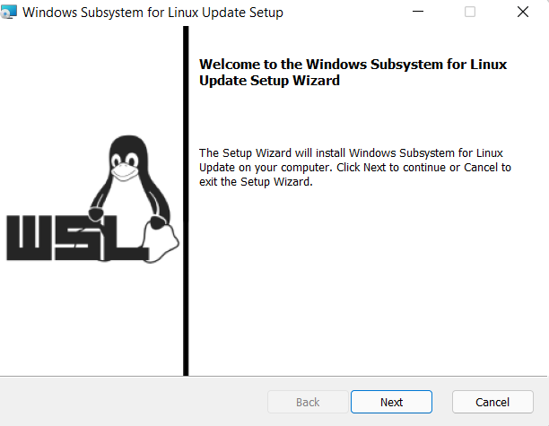
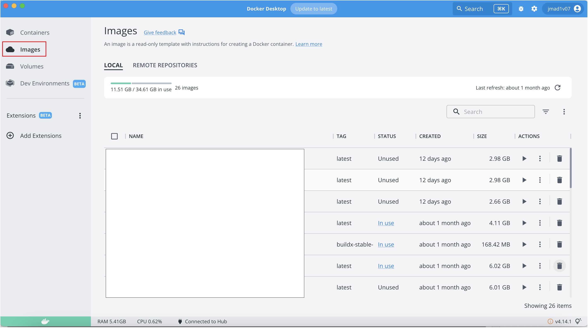
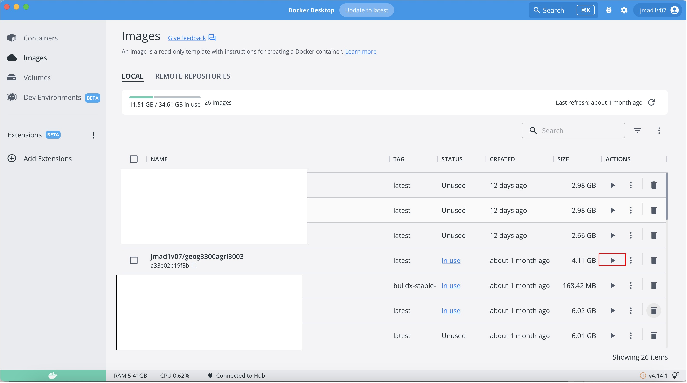
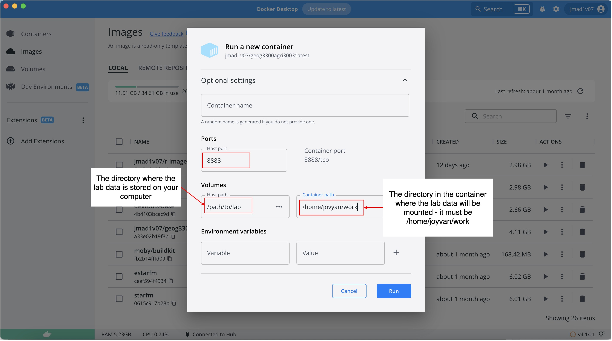
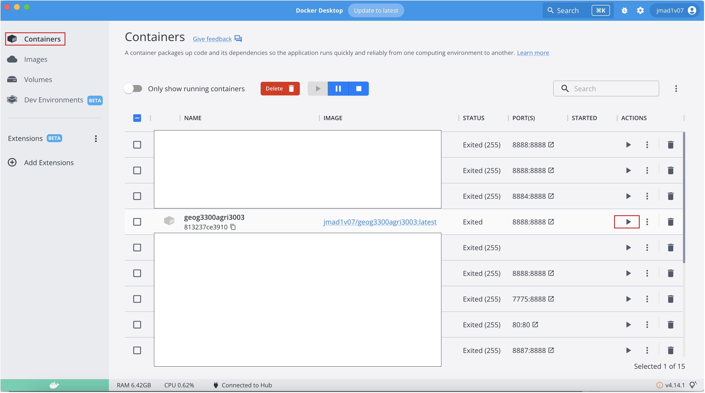
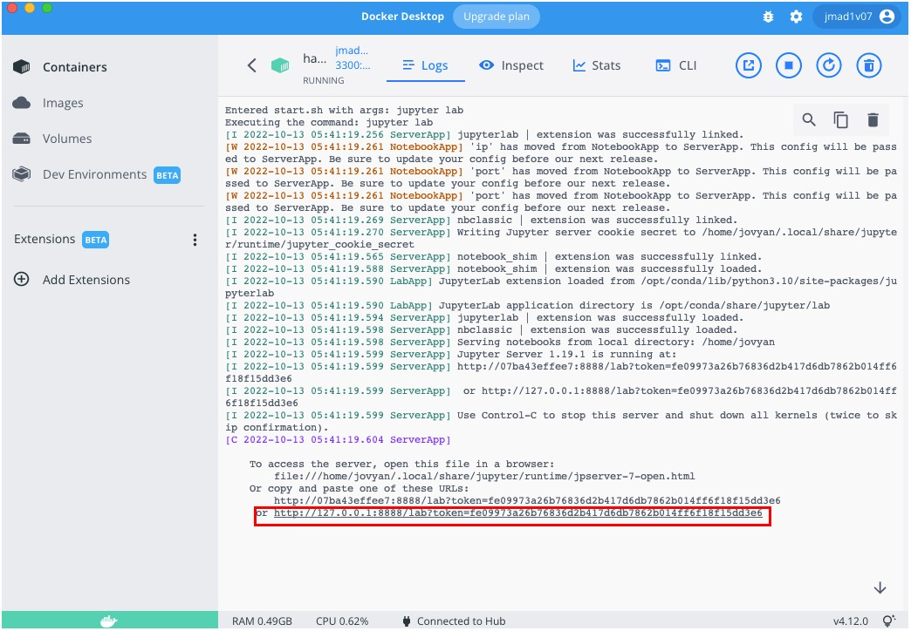
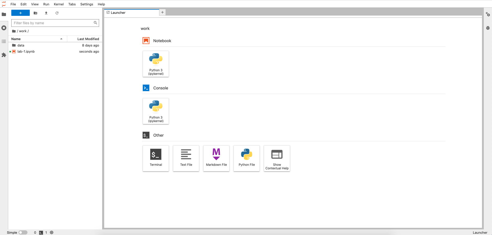

Software
A course specific Python-enabled docker image will be provided for students to run on their own machines / uni machines with all the software and dependencies pre-installed.
Python 3.X will be used throughout the course (unless specialist GUI software is required).
All labs will be delivered using Jupyter notebooks via JupyterLab.
Uni machines
This is the recommended environment for running the lab environment. Detailed instructions for launching the lab environment on the uni machines can be found in LMS. However, you need to login to the ubuntu image on the uni machines. Then open the terminal and run launch geog300agri3003.
Personal devices
Google Colab
You can run each week’s lab using Google colab - a cloud based environment to run Jupyter notebooks. Click the colab button at the top of each lab’s notebook. It looks like:

Using Google Colab is the recommended approach to run the labs if you’re working on your own computer.
Docker
If you want to run the lab’s notebooks locally in the same environment as on the uni machines, you can install docker which will let you run the lab environment.
Windows
Install docker desktop for Windows here and follow the instructions.
System requirements for Windows devices:
- Windows 11 64-bit: Home or Pro version 21H2 or higher, or Enterprise or Education version 21H2 or higher.
- Windows 10 64-bit: Home or Pro 21H1 (build 19043) or higher, or Enterprise or Education 20H2 (build 19042) or higher.
- 64-bit processor.
- 4GB of RAM.
If the installation has completed successfully, you should see this screen:

Possible extra steps
You may see a prompt to install or update WSL2, if this does appear click the link in the message:

Then download the WSL2 Linux Kernel Package by clicking on the link:

Then follow the installation steps to install or update WSL 2:

Then restart your computer.
If it’s not installed, you will need to install WSL2 must be installed. For more information about installing WSL2, see here for instructions.
Admin and user permissions
If the admin account is different to the user account on your Windows machine, follow these steps from docker - install interactively:
- Run Computer Management as an administrator
- Go to Local Users and Groups > Groups > docker-users
- Right-click to add the user to the docker-users group.
- Log out and login (or restart) for the changes to take effect.
Mac
Install docker desktop for Mac here and follow the instructions.
Select the correct installer for your Mac depending on whether you have an intel or silicon chip.
System requirements for Mac devices:
- macOS must be version 10.15 or newer
- 4 GB of RAM
Download the course image
Windows
Open the command prompt or powershell and run:
docker pull jmad1v07/geog3300agri3003Mac
Open the terminal and run:
docker pull jmad1v07/geog3300agri3003Run the course image
Open docker desktop and head to the Images tab.

Find the jmad1v07/geog3300agri3003 image and click on Run.

This should bring up an Optional settings dialog. Here, we need to do two things.
First of all we need to set a port, in most cases you can set this to 8888 (or any number above 1024 safely).
Second of all we need to mount a directory on our computer where the lab data and notebooks are stored to a directory inside the container. This means we can work with the data and notebook stored on our computer inside the containers environment (which has Python and relevant libraries installed) and all changes we make will be saved back to the directory on our machine. Hit Run to launch the container.

Now, go to the Containers tab. Find the container we have just launched and click on the three vertical dots symbol ⋮ and then click View details.

Finally, to access the container and our notebook environment click on the link which looks like http://127.0.0.1:8888/lab?token=fXBXBXBXBXBXBXBXBXBXXBXBBXX.

This should load the Jupyterlab environment in your browser. If it doesn’t, copy the link and paste it into your browser. If all has gone well you should see the Jupyterlab environment:
